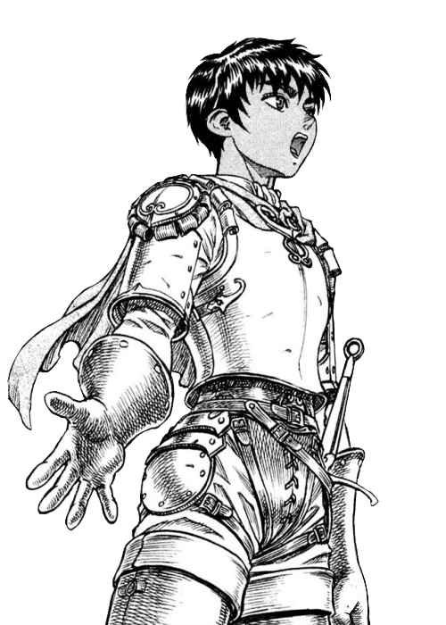

GUTS
Guts (tambien conocido como el Espadachín Negro), es el protagonista del manga/anime Berserk.
Es un mercenario que va de batalla en batalla, sin rumbo alguno, marcado por una dura infancia. Todo cambia cuando conoce a Griffith, el líder de una banda de mercenarios llamada La Banda del Halcón.
Estar en aquella banda de mercenarios hizo que Guts apreciase más su vida ni no arriesgarla a la ligera. Incluso llego a tener el afecto que no tuvo de niño.
Fue miembro de la Banda del Halcón hasta los últimos dias de esta en el Eclipse.
Guts acabo roto por dentro y decidió entrar al camino de la venganza, uno difícil de entrar y difícil de salir. Asi para poder tomar las vidas de los Mano de Dios.
Asi para poder tomar las vidas de los Mano de Dios, los seres que le arrebataron todo en cuestión de segundos.
ARCOS
EDAD DORADA
ESPADACHÍN NEGRO
CASTIGO
HALCÓN MILENARIO
FANTASÍA
CASKA
Caska es uno de los personajes femeninos clave en Berserk. Es la única mujer de la Banda del Halcón y de las guerreras mas fuertes de la misma.
Venia de una familia de agricultores que, un dia, decidieron vederla a un noble para poder mantenerse ellos con vida. El noble intento abusar de ella cuando, llego Griffith.
Desde ese momento, Caska a sido fiel a Griffith y no ha duddao de el ni en un solo momento. En los inicios, no le parecia bien la union de Guts en la Banda del Halcón, pero no tardó en ver a Guts como un gran guerrero. Incluso llegando a ser un "amante".
Ella fue, junto a Guts, de las personas que peor quedaron psicologicamente después de sus vivencias en el Eclipse.
ARCOS
EDAD DORADA
CASTIGO
HALCÓN MILENARIO
FANTASÍA
GRIFFITH
Griffith es uno de los protagonista y principal antagonista (o villano) de Berserk. También es el líder la de Banda del Halcón.
No se sabe mucho acerca de la vida de Griffith antes de ser el líder de la Banda del Halcón, pero se sabe que su principal sueño era "tener su propio reino" y que, sacrificaria cualquier cosa con tal de tenerlo.
El siempre decia que, lo que hacia lo hacia por su sueño, era directo con sus soldados y nunca les mentia. Pero la llegada de Guts a la banda hizo que Griffith hiciese una cosa impnsable: olvidarse de su sueño.
Esto hasta que Guts decidio abandonar-los y cayó en uuna "depresión".
Intentó escapar utilizando el sexo como medio, pero no funcionó. Durante el año que Guts se fue, estuvo en las mazmorras del castillo de Midland por "violar" a la princesa durante 1 año.
Ya no era el de antes, ahora estava más debil que nunca y solo buscaba su antiguo "poder". Tanto lo ansiaba que decidió sacrificar a todos sus compañeros en el famoso Eclipse para convertirse en un ser a la altura de Dios.
ARCOS
EDAD DORADA
CASTIGO
HALCÓN MILENARIO
FANTASÍA